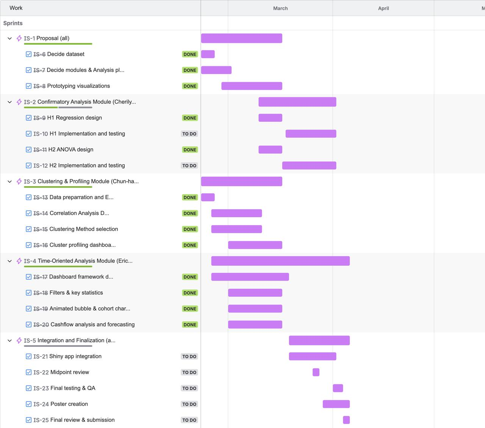

Project Proposal
1 Overview & Motivation
This project explores FinTech adoption and user engagement using the COFINFAD dataset. As digital financial services become increasingly ubiquitous, adoption and engagement rates may still vary across different user groups due to differences in demographic background, financial behavior, product usage, and digital literacy. However, these patterns are often not immediately visible within raw datasets, remaining inaccessible to decision-makers without systematic analysis.
To bridge this gap, this project integrates the customer, transaction, product adoption, application usage, and satisfaction data, into a custom built Shiny web application. By combining data analytics and data visualisation techniques, the application aims to democratise financial insights, providing an intuitive, interactive environment for non-technical stakeholders to explore and utilise the data effectively.
2 Objectives
The key objectives of this project are to:
Examine the COFINFAD dataset to derive useful insights to better understand the fintech company’s customer base in the following dimensions:
Test hypothesis-driven relationships between customer behaviour and business outcomes (for example, whether behavioural indicators significantly predict customer value outcomes, and whether spending differs significantly across customer groups) using confirmatory data analysis.
Identifying natural segments in the customer base, to inform downstream decision making on resource optimisation and precision marketing towards different customer segments
Monitor business performance and KPIs with an interactive dashboard to identify temporal trends in the data
Forecast future cashflow needs of the company to support user transactions based on historical trends.
Combine the above insights into an interactive and intuitive to use visual analytics application
3 Data
This project is based on the COFINFAD: Colombian Fintech Financial Analytics Dataset, obtained from the Mendeley Data repository. The dataset contains behavioral and transactional records from 48,723 customers of a Colombian fintech company and spans a 12-month observation period from 4 January 2023 to 29 December 2023. It includes a total of 3,159,157 transactions, providing a substantial empirical basis for analyzing customer behavior in digital financial services.
The dataset consists of 57 variables that capture a broad range of customer-related information, including demographics, transaction behavior, product adoption, customer satisfaction, Net Promoter Score (NPS), mobile application usage metrics, churn probability indicators, and geographic distribution across Colombian cities. Transaction amounts are expressed in Colombian Pesos (COP), while satisfaction measures are recorded on a 6-point scale.
4 Analytical Approach
The app will contain three main modules, each covering a different analytical approach to uncover useful business insights from the customer and transaction behaviour data.
- Confirmatory Data Analysis
- Hypothesis testing on behaviour-outcome relationships (for example, regression-based testing of whether selected behavioural predictors significantly explain customer value outcomes).
- Group difference testing (ANOVA) to assess whether key metrics differ across customer segments.
- Decision-focused reporting of effect size, significance, and practical business interpretation.
- Clustering Analysis
- Dashboard supporting customer segmentation analysis
- Correlation analysis to screen candidate clustering variables
- Comparison of clustering methods (e.g. K-means, PAM, GMM) and selection of suitable number of clusters
- Cluster size distribution analysis
- Behavioural contrast across clusters using parallel coordinate plots
- Cluster profiling
- Demographic composition analysis of each cluster
- Interpretation of customer segments based on behavioural and demographic characteristics
- Dashboard supporting customer segmentation analysis
- Time-oriented Data Analysis
- Dashboard monitoring transaction behaviour of customers over time
- EDA - Animated bubble chart tracking average transaction behaviour over time
- Cohort retention analysis
- Seasonal trend analysis with cycle plots/STL decomposition
- Cashflow analysis
- Historical net cashflow visualisation with area chart
- Composition analysis of how different customer segments contribute to net cashflow
- Forecasting future cashflow
- Dashboard monitoring transaction behaviour of customers over time
5 Prototype
The main prototype modules will be split as follows:
Please refer to the respective prototype tabs for details on the R codes to create the outputs for each module.
6 Storyboard
Please refer to Storyboard page for details on the planned layouts and types of plots expected for each module.
7 R Packages
The following R packages will be used in this project:
| R Package | Description |
|---|---|
| tidyverse | Provides functions for data manipulation and visualisation |
| tsibble | Provides a data infrastructure for tidy temporal data with wrangling tools |
| fable | Provides modelling framework to estimate time series data using tsibble data |
| feasts | Provides functions for generating cycle plots and decomposing time series data |
| lubridate | Provides functions to parse and manipulate dates and datetimes |
| tidymodels | Provides functions for modeling and machine learning in r |
| timetk | Provides functions for visualising and analysing time-series data. |
| modeltime | extension to tidymodels which provides a unified framework for time series forecasting |
| rlang | provides functions to work with base types and core R features |
| cluster | Clustering evaluation utilities (e.g., silhouette). |
| factoextra | Helper functions for visualising clusters and PCA results . |
| DT | Interactive tables for cluster profile summaries in Shiny. |
| shiny | UI and server framework for integrating this module into the final Shiny app. |
| plotly | Interactive plotting for cluster maps and exploratory visuals. |
| e1071 | Skewness computation. |
8 Scope of Work
